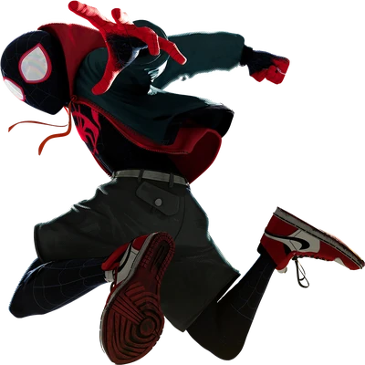

Watercolor
สีน้ำ — สีฟุ้ง ขอบนุ่ม มีพื้นผิวกระดาษและสีซึม
Blur · Saturation · Paper grainDREAM STAR / VISUAL EXPERIMENT
ทดลองแปลงภาพเดียวกันให้กลายเป็นงานศิลปะหลายเทคนิค

สีน้ำ — สีฟุ้ง ขอบนุ่ม มีพื้นผิวกระดาษและสีซึม
Blur · Saturation · Paper grainสีเทียน — สีสดเป็นชั้น มีรอยขีดและเม็ดสีไม่สม่ำเสมอ
Texture overlay · Multiply · Grainสีชอล์ก — ฟุ้งนุ่ม สีด้าน ขอบภาพละมุน
Soft light · Desaturation · Grainดินสอ — โทนขาวดำ เน้นเส้นและคอนทราสต์
Grayscale · Contrast · Edge textureสีน้ำมัน — สีแน่น อิ่มตัว คล้ายปาดสีหนา
Contrast · Saturation · Brush textureภาพพิมพ์ — สร้างมิติด้วยจุดเม็ดสกรีน
Dot pattern · Blend modeฟิล์มวินเทจ — สีซีด อุ่น มีเกรนและแสงรั่ว
Sepia · Grain · Color overlayพอยต์ทิลลิซึม — ภาพประกอบจากจุดสีเล็ก ๆ
Dot screen · SVG / Canvasหมายเหตุ: ตัวอย่างนี้เป็นการจำลองด้วย CSS เพื่อเปรียบเทียบแนวทางเบื้องต้น ไม่ใช่การแปลงภาพด้วย AI หรือการวาดพิกเซลใหม่จริง ๆ